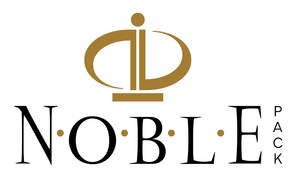

Trade Mark Journal No.2025/010 7 March 2025
UK00004165881 26 February 2025 (9,14,16,18,20,22,26)
Mark 1

Mark 2
- Class 9
- Optical glasses; Optical readers; Sight glasses [optical].
- Class 14
- Jewellery boxes and watch boxes; Watch boxes; Jewelry boxes; Wooden jewellery boxes; Presentation boxes for jewellery; Presentation boxes for jewelry; Jewelry rolls; Jewellery rolls; Jewelry rolls for storage; Jewelry rolls for travel; Jewelry organizer rolls for travel; Jewellery boxes; Jewellery boxes [fitted]; Jewelry boxes of metal; Leather jewelry boxes; Jewellery cases [caskets or boxes]; Jewellery items.
- Class 16
- Cardboard packaging; Packaging materials; Containers of cardboard for packaging; Cartons of cardboard for packaging; Packaging cartons of cardboard; Packaging cartons of card; Cartons of card for packaging; Packaging wrappers of plastic; Containers of card for packaging; Packaging containers of card; Containers of paper for packaging; Packaging containers of paper; Gift packaging; Plastic materials for packaging; Paperboard boxes [for industrial packaging]; Paperboard boxes for industrial packaging; Plastic foil for packaging; Packaging boxes of cardboard; Plastic material for packaging; Paper pouches for packaging; Plastic bags for packaging; Paperboard trays for packaging food; Foils of plastic for packaging; Airtight packaging of cardboard; Industrial packaging containers of paper; Plastic film for packaging; Plastic films for wrapping and packaging; Plastic bags for wrapping and packaging; Plastic films for packaging; Packaging boxes of card; Containers of paper for packaging purposes; Plastic sheets for packaging; Packaging boxes of paper; Plastic blister packs for packaging; Blister packs for packaging; Polythene films for wrapping or packaging; Bubble packs for packaging; Paper bags for packaging; Packaging bags of paper; Bags of bubble plastics for packaging; Airtight packaging of paper; Plastic sheets for wrapping and packaging; Paper envelopes for packaging; Packaging materials of plastic for sandwiches; Plastic bubble packs for packaging; Bubble packs (Plastic -) for wrapping or packaging; Plastic bubble packs for wrapping or packaging; Adhesive plastic film for packaging; Packaging materials made of cardboard; Bags incorporating bubble plastics for packaging; String dispensers for use in packaging; Adhesive packaging tapes; Bags made of plastics for packaging; Bags [envelopes, pouches] of paper or plastics, for packaging; Waterproofing film (Plastic -) for packaging; Packaging containers of regenerated cellulose; Bags and articles for packaging, wrapping and storage of paper, cardboard or plastics; Paper gift wrap bows; Paper bows for gift wrap; Treated paper for wrapping flowers and floral displays; Plastic bags for packing; Paper bags; Bags of paper; Paper bags and sacks; Paper for bags and sacks; Plastic shopping bags; Gift bags; Carrier bags; Plastic bags for wrapping; Box files; Cardboard boxes; Boxes of cardboard; Cardboard gift boxes; Gift boxes; Display boxes of cardboard; Paper boxes; Boxes of paper; Collapsible cardboard boxes; Gift boxes made of cardboard; Paper gift boxes; Boxes of cardboard or paper; Boxes of paper or cardboard; Boxes made of cardboard; Fiberboard boxes; Hygienic paper; Sheets for wrapping made of paper; Plastic wrap; Plastic sheets for wrapping; Plastic gift wrap; Plastic bubble packs for wrapping; Pouches of plastic for wrapping; Plastic foil for wrapping; Plastic bubble film for wrapping; Plastic bags for packaging ice; Adhesive plastic film for wrapping; Rolls of plastic film for packaging; Plastic films for wrapping; Foils of plastic for wrapping; Plastic film for wrapping; Paper gift wrap; Gift wrap paper; Air bubble plastics for wrapping; Paper carton sealing tape; Gift cards; Greetings cards; Gift paper; Gift cartons; Printed cards; Gift wrap; Gift wrapping paper; Gift wrapping foil.
- Class 18
- Bags; Tote bags; Carry-on bags; Bags for clothes; Drawstring bags; Carry-all bags; Carrying bags; Grocery tote bags; Luggage, bags, wallets and other carriers; Cloth bags; Leather bags; Travel bags; Bags for travel; Leather bags and wallets; Reusable shopping bags; Courier bags; Knitted bags; Hand bags; Travelling bags; Traveling bags.
- Class 20
- Jewellery organizer displays; Jewelry organizer displays; Display furniture; Display racks for the display of goods for exhibition purposes; Shop furniture for use in displaying cards; Furniture for displaying goods; Acrylic counter displays; Units [furniture] for the display of stationery; Display racks for the display of goods for sale purposes; Display stands for merchandise; Costume display stands; Exhibition display stands [non-metallic]; Point of sale displays [furniture]; Trays being parts of shop display furniture; Showcases; Showcases [furniture].
- Class 22
- Pouches of textile for packaging; Envelopes of textile for packaging; Bags of textile for packaging; Packaging bags of textile; Textile bags for merchandise packaging [envelopes, pouches]; Industrial packaging containers of textile; Packaging string; Packaging bags of textile material; Bags [envelopes, pouches] of textile, for packaging; Materials [bags] for packaging granulose products in bulk; Sacks of textile for packaging.
- Class 26
- Ribbons; Ribbons for wrapping; Velvet ribbons; Decorative ribbons; Prize ribbons; Ribbons (Prize -); Ribbons and bows, not of paper, for gift wrapping.
Noble Gift Packaging Limited